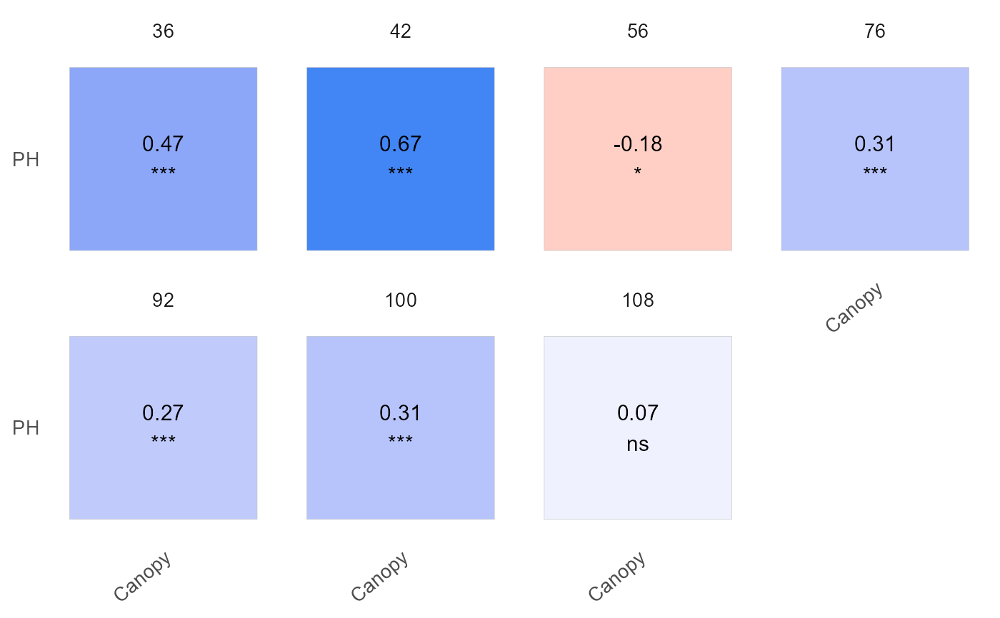
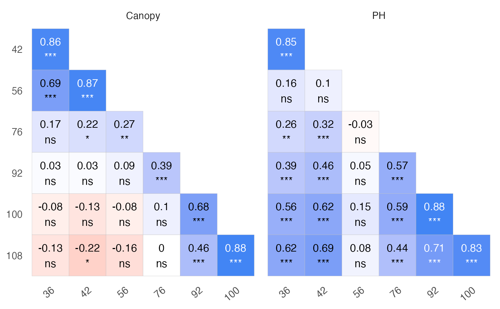

Creates various plots for an object of class read_HTP. Depending on the specified type, the function can generate plots that show correlations between traits over time, correlations between time points for each trait, or the evolution of traits over time.
Usage
# S3 method for read_HTP
plot(
x,
type = "trait_by_time",
label_size = 4,
signif = FALSE,
method = "pearson",
filter_trait = NULL,
plot_id = NULL,
n_row = NULL,
n_col = NULL,
base_size = 13,
return_gg = FALSE,
...
)Arguments
- x
An object inheriting from class
read_HTP, resulting from executing the functionread_HTP().- type
Character string or number specifying the type of plot to generate. Available options are:
"trait_by_time" or 1Plots correlations between traits over time (default).
"time_by_trait" or 2Plots correlations between time points for each trait.
"evolution" or 3Plots the evolution of traits over time.
- label_size
Numeric. Size of the labels in the plot. Default is 4. Only works with type 1 and 2.
- signif
Logical. If
TRUE, adds p-values to the correlation plot labels. Default isFALSE. Only works with type 1 and 2.- method
Character string specifying the method for correlation calculation. Available options are
"pearson"(default),"spearman", and"kendall". Only works with type 1 and 2.- filter_trait
Character vector specifying the traits to exclude from the plot.
- plot_id
Optional plot_id to filter the evolution type of plot. Default is
NULL. Only works with type 3.- n_row
Integer specifying the number of rows to use in
facet_wrap(). Default isNULL. Only works with type 1 and 2.- n_col
Integer specifying the number of columns to use in
facet_wrap(). Default isNULL. Only works with type 1 and 2.- base_size
Numeric. Base font size for the plot. Default is 13.
- return_gg
Logical. If
TRUE, returns the ggplot object instead of printing it. Default isFALSE.- ...
Further graphical parameters for future improvements.
Value
A ggplot object and an invisible data.frame containing the correlation table when type is "trait_by_time" or "time_by_trait".
Examples
library(exploreHTP)
data(dt_potato)
dt_potato <- dt_potato
results <- read_HTP(
data = dt_potato,
genotype = "Gen",
time = "DAP",
plot = "Plot",
traits = c("Canopy", "PH"),
row = "Row",
range = "Range"
)
table <- plot(results, label_size = 4, signif = TRUE, n_row = 2)

table
#> # A tibble: 7 × 7
#> time col row corr p.value n signi
#> <dbl> <fct> <fct> <dbl> <dbl> <dbl> <fct>
#> 1 36 Canopy PH 0.46 8.23e-11 176 ***
#> 2 42 Canopy PH 0.67 8.55e-27 196 ***
#> 3 56 Canopy PH -0.21 3.65e- 3 196 **
#> 4 76 Canopy PH 0.3 1.41e- 5 196 ***
#> 5 92 Canopy PH 0.28 5.96e- 5 196 ***
#> 6 100 Canopy PH 0.32 6.45e- 6 196 ***
#> 7 108 Canopy PH 0.07 3.14e- 1 196 ns
plot(results, type = "time_by_trait", label_size = 4, signif = TRUE)
